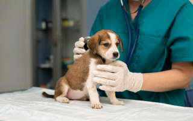

펫케어팁
강아지 빈혈 증상과 빈혈에 좋은 음식!
Editor.메디펫


강아지 빈혈 증상은 무엇일까요?
사람은 어지럼증을 느낄 때 말을 할 수 있지만
강아지들은 표현할 수 없기 때문에
보호자가 아이의 상태를 잘 살펴야 해요!
강아지도 사람처럼 빈혈이 있는데요.
흔한 기저질환이며, 산소를 운반하는 역할을 가진
헤모글로빈이나 적혈구를 충분히 생성하지 못할 때
발생할 수 있습니다.
구토, 검은 변, 빠른 맥박·호흡, 무기력,
식욕·컨디션 저하, 턱·얼굴 붓기, 체중감소,
창백한 눈·귀·몸 등이 증상이 될 수 있어요
철분이 함유된 날달걀 노른자, 시금치,
초록색 파프리카, 소 간 등이 강아지 빈혈에
좋은 음식이에요.